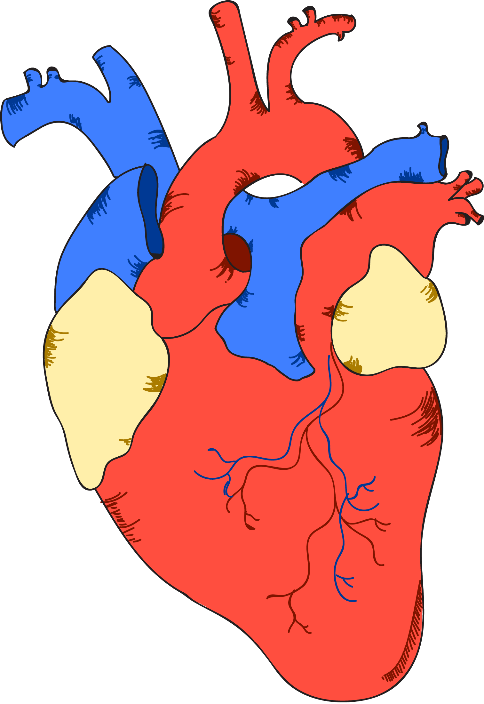
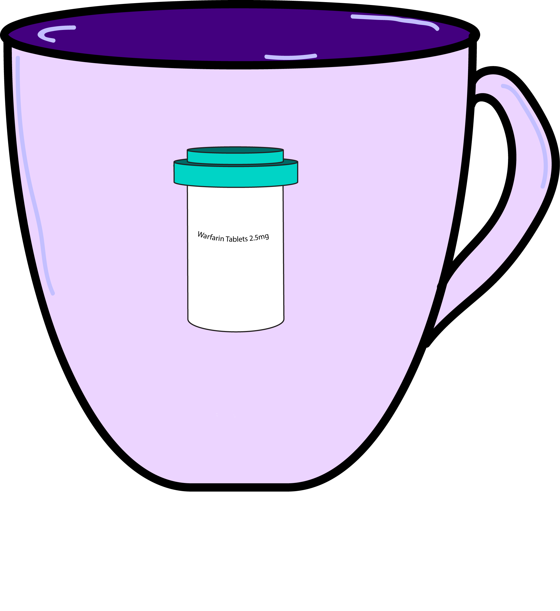

Physiological Effects of Energy Drinks
Although many people enjoy the rush of caffeine, the same physiological processes that cause this feeling can have detrimental effects. Though caffeine stimulates skeletal muscle, it relaxes smooth muscle and is also a mild diuretic. Caffeine stimulates the central nervous system, causing vasoconstriction which increases blood pressure, heart rate and respiratory rate. These temporary changes to vital signs are responsible for feeling of the rush of caffeine, but can also be dangerous in large doses, particularly to those already at higher risk to cardiac problems.

While caffeine in mild doses is safe for individuals that are not prone to cardiac events, it is addictive and has clear withdrawal symptoms. Yet in higher doses, caffeine is associated with many serious conditions including miscarriage, kidney failure, seizures and rhabdomyolysis (muscle breakdown)**. Though conditions as serious as these are uncommon, they are certainly possible which is why it is crucial to limit caffeine intake to around 250 mg a day.
Since caffeine is poorly regulated, it is difficult to know the extent of its effects on healthy people. However, it is clear from a variety of studies that caffeine can worsen pre-existing conditions. Cardiac conditions can be negatively affected by high doses of caffeine, particularly in patients that already have high blood pressure. Similarly, caffeine interacts negatively with many prescription medications, particularly blood thinners, blood pressure medications and antidepressants.

Caffeine can also make adolescents with eating disorders more prone to cardiac events. Excessive consumption of caffeine is common among adolescents with eating disorders because it is a mild diuretic and also relaxes smooth muscle. In recent studies*** caffeine has also been found to have substantial effects in epileptic patients. Though sporadic caffeine intake can increase chances of seizures, habitual intake over an extended period of time can reduce seizure recurrence. In diabetic patients, caffeine can be particularly dangerous because it can have a substantial and rapid effect on blood sugar.
When is comes to energy drinks, dosage can be tricky because of the lack of regulation by the FDA. Although the amount of caffeine in energy drinks is always listed, there may be other ingredients such as cacao that also contain caffeine but are not included in the total mg caffeine per serving. Though energy drinks might help you feel better in the moment, be wary of the long term detrimental effects they might be having on your body, particularly in large doses and in people who are already predisposed to cardiac conditions.
Sources:
http://pediatrics.aappublications.org/content/pediatrics/127/3/511.full.pdf
http://pediatrics.aappublications.org/content/pediatrics/127/3/511.full.pdf
http://pediatrics.aappublications.org/content/pediatrics/127/3/511.full.pdf